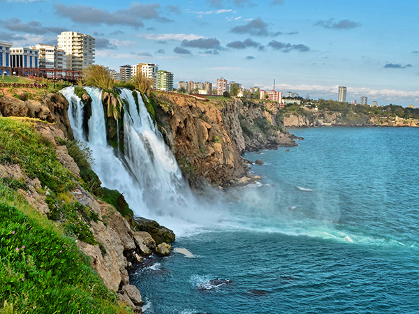
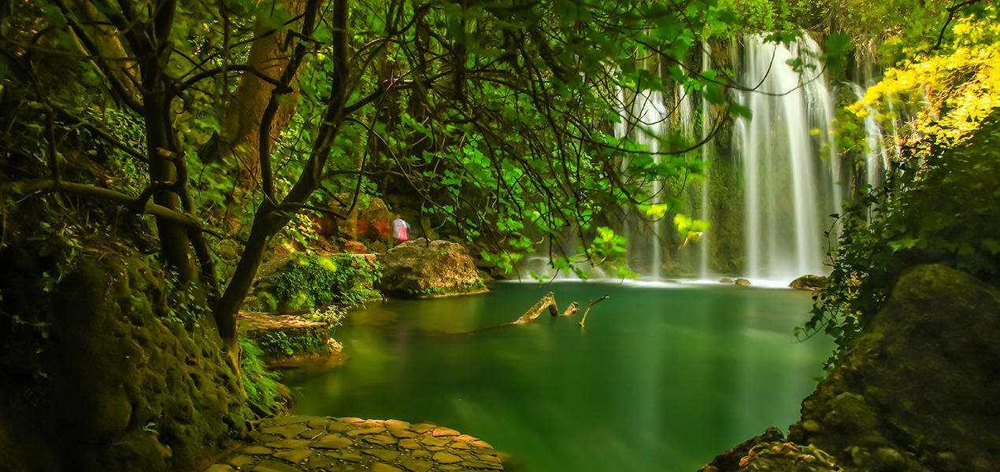
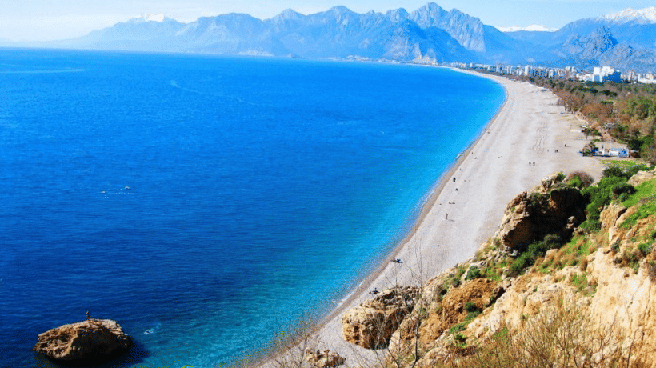
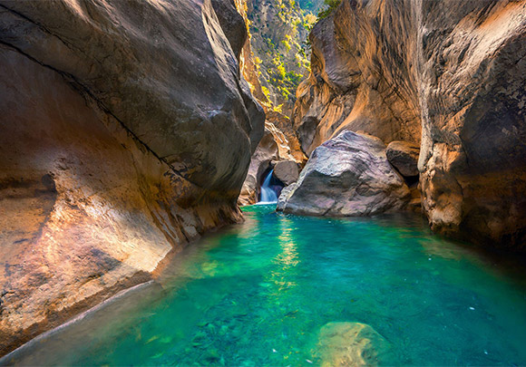
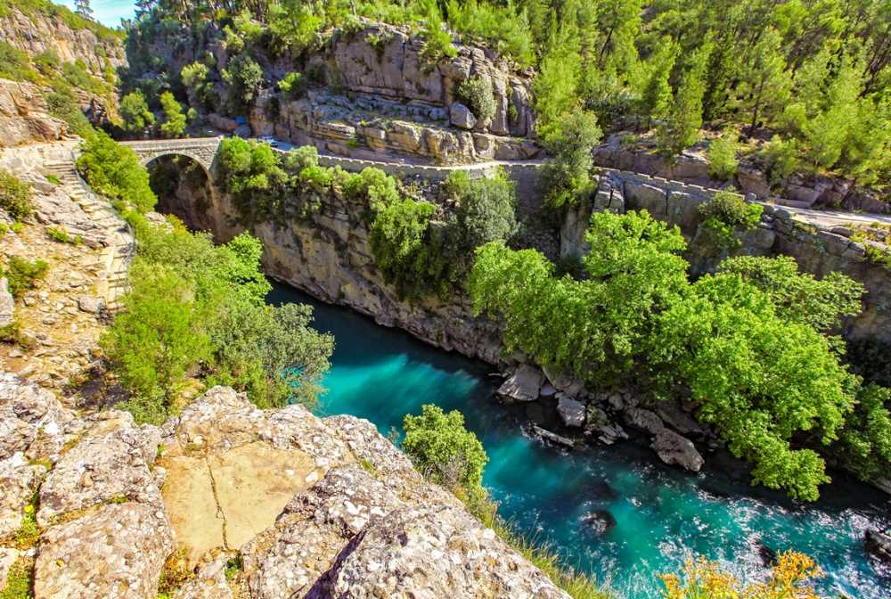

Antalya şehir merkezine çok yakın konumda bulunan Düden Şelalesi, huzur dolu bir doğa deneyimi sunar. Hem üst hem alt şelale olarak iki farklı alanda ziyaret edilebilir.
Adres: Varsak Mah., Kepez/Antalya
Ziyaret Saatleri: 08:00 – 19:00
Giriş: Ücretli (Tam: 25 TL)

Doğayla iç içe yürüyüş yapmak isteyenler için harika bir tabiat parkı. Yemyeşil alanlar ve serin sular eşliğinde doğayla buluşmak mümkün.
Adres: Kurşunlu Tabiat Parkı, Aksu/Antalya
Ziyaret Saatleri: 08:00 – 19:00
Giriş: Ücretli (Tam: 20 TL)

Antalya’nın simge plajlarından biri olan Konyaaltı, yürüyüş yolları, bisiklet parkurları ve berrak deniziyle ailelerin favorisi.
Adres: Konyaaltı/Antalya
Ziyaret Saatleri: Her gün (Gün boyu)
Giriş: Ücretsiz

Toroslar'dan gelen buz gibi sularla dolu bu kanyon, doğa yürüyüşü ve serinlemek isteyenler için mükemmel bir adres.
Adres: Saklıkent, Döşemealtı/Antalya
Ziyaret Saatleri: 08:00 – 18:00
Giriş: Ücretli (Tam: 20 TL)

Rafting, kamp ve doğa yürüyüşü için Antalya’nın en popüler doğa alanlarından biridir. Antik köprüleriyle de meşhurdur.
Adres: Manavgat/Antalya
Ziyaret Saatleri: Her gün 08:00 – 19:00
Giriş: Ücretsiz